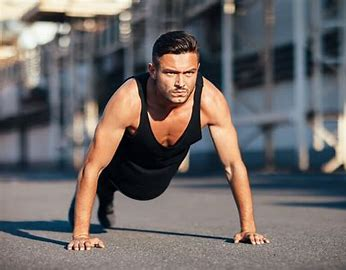
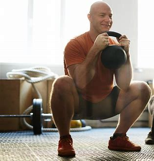
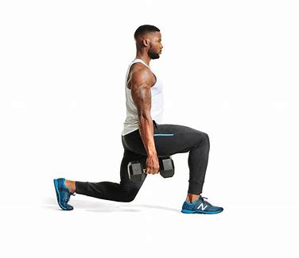
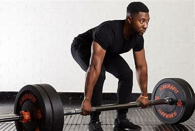
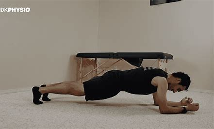
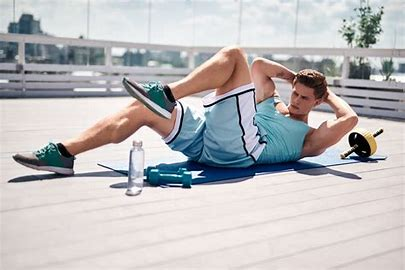
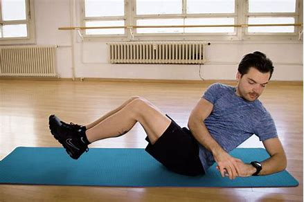
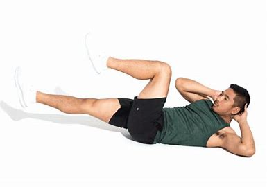

Exercises
Exercise is physical activity that is performed with the purpose of improving or maintaining physical fitness and overall health.
It involves moving the body in a way that challenges the muscles, cardiovascular system, and other bodily systems.
Exercise can take many forms, including cardiovascular activities like running, cycling, or swimming, as well as strength training exercises like weight lifting or bodyweight exercises.
Regular exercise is an important component of a healthy lifestyle and can provide numerous benefits, such as improved cardiovascular health, increased strength and flexibility, reduced stress and anxiety, and improved mood and overall well-being.
Here you'll find a list of exercises to target specific muscle groups and improve your overall fitness.
Upper Body
- Push-ups 
-
Standard push-up:
This is the most common variation, with hands shoulder-width apart and elbows tucked in close to the body.
-
Wide push-up:
This variation is done with hands wider than shoulder-width apart, which targets the chest more than the standard push-up.
-
Narrow push-up:
This variation is done with hands closer than shoulder-width apart, which targets the triceps more than the standard push-up.
-
Diamond push-up:
This variation is done with hands forming a diamond shape, which targets the triceps more than the standard push-up.
-
Decline push-up:
This variation is done on a decline bench, which targets the upper chest more than the standard push-up.
-
Incline push-up:
This variation is done on an incline bench, which targets the lower chest more than the standard push-up.
-
One-arm push-up:
This variation is done with one hand on the ground and one hand on a dumbbell, which targets the shoulders more than the standard push-up.
Push-ups are a classic exercise that have been around for a long time, and for good reason - they are an effective way to build upper body strength and endurance.
Push-ups primarily work the chest, shoulders, and triceps, but also engage other muscles in the body, such as the core and glutes.
There are many different variations of push-ups that can be done to target different muscle groups and add variety to your workout routine.
Here are a few examples:

The bench press is a popular exercise that primarily works the chest, shoulders, and triceps.
It is often done with a barbell or dumbbells, and can be performed on a flat, incline, or decline bench.
Here are a few examples:
-
Flat bench press:
This is the most common type of bench press, where the bench is flat and the barbell is lifted straight up and down.
-
Incline bench press:
This variation involves lifting the barbell at an angle on an incline bench, which targets the upper portion of the chest muscles.
-
Decline bench press:
This variation involves lifting the barbell at an angle on a decline bench, which targets the lower portion of the chest muscles.
-
Dumbbell bench press:
This variation is done with dumbbells instead of a barbell, which targets the shoulders more than the flat bench press.
-
Close-grip bench press:
This variation involves holding the barbell with a narrow grip, which puts more emphasis on the triceps.
-
Wide-grip bench press:
This variation is done with a wide grip, which targets the chest more than the flat bench press.
-
Smith machine bench press:
This variation involves using a Smith machine, which guides the barbell along a fixed path and can be helpful for beginners or those with limited mobility.
However, it is important to use proper form and technique to avoid injury and maximize the benefits of the exercise.

The dumbbell fly is an isolation exercise that primarily targets the chest muscles.
It involves lying on a bench with a dumbbell in each hand and bringing the weights together in a wide arc, while keeping a slight bend in the elbows.
Here are some of the different types of dumbbell flys:
-
Flat dumbbell fly:
This is the most common type of dumbbell fly, where the bench is flat and the arms are lifted straight up and down.
-
Incline dumbbell fly:
Involves lifting the dumbbells at an angle on an incline bench, which targets the upper portion of the chest muscles.
-
Decline dumbbell fly:
Involves lifting the dumbbells at an angle on a decline bench, which targets the lower portion of the chest muscles.
-
Seated dumbbell fly:
This variation involves sitting on a bench with a backrest and bringing the dumbbells together in front of the chest, which can help to isolate the chest muscles and prevent cheating.
-
Standing dumbbell fly:
This variation involves standing with the dumbbells in each hand and bringing the weights together in front of the chest, which can help to improve core stability and balance.
However, it is important to use proper form and technique to avoid injury and maximize the benefits of the exercise.

The shoulder press is a compound exercise that primarily targets the shoulder muscles.
It involves lifting a weight overhead, typically with a barbell or dumbbells.
Here are some of the different types of shoulder presses:
-
Barbell shoulder press:
This is the most common type of shoulder press, where the barbell is lifted from the front of the shoulders to overhead.
-
Dumbbell shoulder press:
This variation involves using dumbbells instead of a barbell, which allows for a greater range of motion and can help to improve stability in the shoulders.
-
Seated shoulder press:
This variation involves sitting on a bench with a backrest and pressing the weight overhead, which can help to isolate the shoulder muscles and prevent cheating.
-
Standing shoulder press:
This involves standing with the weight in each hand and pressing the weight overhead, which can help to improve core stability and balance.
-
Arnold press:
This variation involves rotating the shoulders as the weight is pressed overhead, which can help to engage more muscles and improve range of motion.
However, it is important to use proper form and technique to avoid injury and maximize the benefits of the exercise.

Bicep curls are isolation exercises that primarily target the biceps muscles in the arms.
They involve lifting a weight, typically a dumbbell or a barbell, from a fully extended position to a contracted position, while keeping the elbows stationary.
Here are some of the different types of bicep curls:
-
Standard bicep curl
his is the most common type of bicep curl, where a weight is lifted with both hands from a fully extended position to a contracted position.
-
Hammer curl:
This variation involves lifting a weight with both hands, but with the palms facing each other instead of facing upwards.
This targets the brachialis muscles in addition to the biceps. -
Concentration curl:
This variation involves sitting on a bench and lifting a weight with one arm while the other arm provides support. This targets the biceps muscles in a more isolated manner.
-
Preacher curl:
This variation involves using a preacher bench, which has a pad to support the arms, to lift a weight with the biceps muscles.
-
Incline curl:
This variation involves sitting on an inclined bench and lifting a weight with the biceps muscles in a more stretched position, which can help to target the muscle fibers differently.
However, it is important to use proper form and technique, and to gradually increase the weight and intensity over time to avoid injury and maximize the benefits of the exercise.

Tricep dips are bodyweight exercises that primarily target the triceps muscles in the arms.
They involve using a bench, chair, or parallel bars to support the body weight while lowering and lifting the body using the triceps muscles.
Here are some of the different types of tricep dips:
-
Parallel bar dips:
This is the most common type of tricep dip, where the hands are placed on parallel bars and the body is lowered and lifted using the triceps muscles.
-
Bench dips:
This variation involves using a bench or chair instead of parallel bars, with the hands placed on the edge of the bench and the feet on the floor.
The body is then lowered and lifted using the triceps muscles. -
Single-leg dips:
This variation involves performing the dips with one leg lifted off the ground, which can increase the difficulty and challenge the triceps muscles more.
-
Weighted dips:
This variation involves adding additional weight to the body, such as with a weight vest or dumbbell, to increase the intensity of the exercise and build more strength and muscle mass in the triceps.
However, it is important to use proper form and technique, and to gradually increase the intensity and volume of the exercise over time to avoid injury and maximize the benefits of the exercise.
Pull-ups are an effective compound exercise that targets several muscle groups, primarily the back, biceps, and forearms.
The exercise involves hanging from a horizontal bar with an overhand grip and pulling your body weight up towards the bar until your chin is above the bar.
Pull-ups are a challenging exercise that requires strength and control.
Here are some of the different types of pull-ups:
-
Wide grip pull-ups:
Performed with a grip wider than shoulder-width apart, these target the upper back muscles.
-
Close grip pull-ups:
Performed with a grip narrower than shoulder-width apart, these target the biceps and forearms.
-
Chin-ups:
Performed with an underhand grip, these primarily target the biceps.
-
Commando pull-ups:
Performed with one hand facing inward and the other facing outward, these target the back muscles unevenly.
-
L-sit pull-ups:
Performed with your legs raised in an L-shaped position, these target the core muscles in addition to the back and biceps.

Lat pulldowns are a popular exercise for targeting the latissimus dorsi muscles in the back, which are commonly referred to as the "lats."
This exercise is typically done using a cable machine with a bar or handles attached to the cable.
The basic movement involves pulling the bar down towards the chest while sitting on a bench or using a kneeling position.
There are different variations of lat pulldowns that can be done to target different areas of the back and provide variation to the exercise.
Some examples include:
-
Wide-grip lat pulldowns:
Using a wider grip on the bar can help to emphasize the outer portion of the lats.
-
Close-grip lat pulldowns:
Using a closer grip on the bar can help to emphasize the inner portion of the lats and also engage the biceps more.
-
Reverse-grip lat pulldowns:
This variation involves using an underhand grip on the bar, which places more emphasis on the biceps and lower portion of the lats.

Rows are a group of exercises that primarily target the muscles of the back, including the latissimus dorsi, rhomboids, and trapezius.
These exercises involve pulling a weight towards the body with the arms, and they can be performed using various equipment, including barbells, dumbbells, resistance bands, and machines.
Some of the different types of rows include:
-
Bent-over barbell rows:
This exercise involves bending over with a barbell in hand and pulling it towards the chest while keeping the back straight.
-
T-bar rows:
This exercise is performed with a barbell and a T-bar machine, and involves pulling the weight towards the chest while keeping the back straight.
-
Seated cable rows:
This exercise is performed using a cable machine and involves pulling the weight towards the chest while sitting upright.
- One-arm dumbbell rows:
This exercise involves supporting the body with one hand on a bench while pulling a dumbbell towards the chest with the other hand.
-
Inverted rows:
This exercise involves using a bar or suspension trainer to pull the body up towards the bar while keeping the back straight.
Lower Body
Lower body workouts are exercises that target the muscles of the lower body, including the glutes, hamstrings, quadriceps, calves, and lower back.
These exercises are crucial for building overall strength, improving balance, and enhancing athletic performance.
- Squats 
- Lunges 
- Deadlifts 
- Calf raises
- Leg press
- Step-ups
A compound exercise that works the glutes, quadriceps, and hamstrings. There are many variations of squats, including back squats, front squats, and single-leg squats.
A unilateral exercise that works the glutes, quadriceps, and hamstrings. Lunges can be done with bodyweight or with added resistance such as dumbbells or a barbell.
A compound exercise that primarily targets the hamstrings, glutes, and lower back. Deadlifts can be done with a barbell, dumbbells, or kettlebells.

An exercise that targets the calf muscles. Calf raises can be done with bodyweight, a resistance band, or a weight machine.

An exercise that primarily targets the quadriceps, hamstrings, and glutes. The leg press can be done on a machine or with a resistance band.

An exercise that targets the quadriceps and glutes. Step-ups can be done with bodyweight or with added resistance such as dumbbells.
Core
The core refers to the group of muscles in your abdomen, lower back, and pelvis that work together to provide stability and support for your spine and pelvis.
A strong core is essential for good posture, balance, and overall body strength. Core workouts typically focus on exercises that engage these muscles, such as planks, sit-ups, crunches, and Russian twists.
Incorporating core workouts into your fitness routine can help improve your overall fitness and prevent injury.
- Plank 
- Crunches 
- Russian twists 
- Bicycle crunches 
- Leg raises
A static exercise that targets the core muscles. Planks can be done with bodyweight or with added resistance such as a weighted vest.
An exercise that targets the rectus abdominis, the main muscle in the abdominal wall. Crunches can be done with bodyweight or with added resistance such as a medicine ball.
An exercise that targets the obliques, the muscles on the sides of the abdomen. Russian twists can be done with bodyweight or with added resistance such as a medicine ball.
Bicycle crunches are a type of abdominal exercise that targets the rectus abdominis (the "six-pack" muscles), as well as the obliques.
To perform bicycle crunches, start by lying on your back with your hands behind your head and your knees bent.
Lift your shoulders off the ground and bring your right elbow to your left knee while straightening your right leg.
Then, switch sides by bringing your left elbow to your right knee while straightening your left leg. Continue alternating sides in a pedaling motion, as if riding a bicycle.

Leg raises are an exercise that primarily target the lower abdominal muscles.
To perform this exercise, lie flat on your back with your arms at your sides and your legs straight.
Slowly lift your legs up towards the ceiling, keeping them straight and your lower back pressed into the floor.
Once your legs are perpendicular to the floor, slowly lower them back down to the starting position.
To increase the difficulty, you can try holding a light weight between your feet or bending your knees slightly as you lift your legs.
Leg raises can also be performed on an incline bench for added difficulty. This exercise can help to improve core strength and stability, as well as hip flexor flexibility.